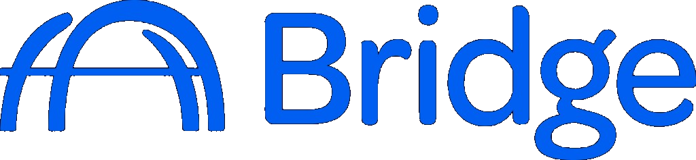
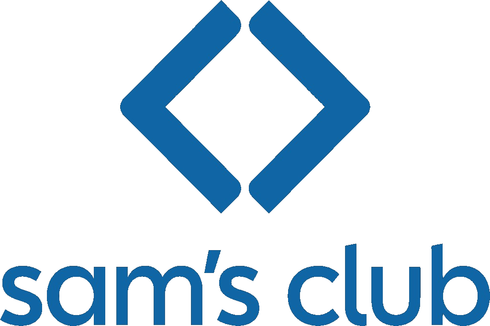
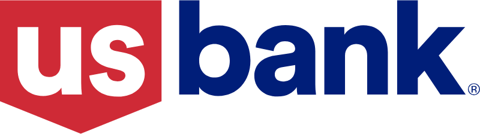
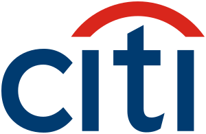
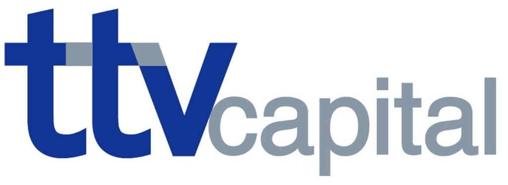

Bridge handles your capital needs so you can get back to growing your business.
$500M+ funded in 2025
Corporate and capital partners




stores. 100% of the cost of goods funded by Bridge.
Bridge Direct Lending · Funded“Bridge makes it possible to fill the orders without giving up equity.”
stores. Production for the launch order funded in full.
Bridge Direct Lending · Funded“When Walmart gives you a shot at 1,200+ stores, you take it.”
Bridge funds approved production, inventory, vendor, and fulfillment costs tied to upcoming retail orders, up to 100% of approved COGS on qualifying transactions, subject to underwriting. Your cash and equity stay free for growth. Eligible Walmart and Sam's Club suppliers have access to a specialized program with faster underwriting decisions and exclusive program rates and terms, subject to underwriting and eligibility.
of dollars of hotel financing guided through closing for owners across the U.S.
Judged by what has been fundedGenerational hoteliers, family operators, and developers. Refinancings, brand-mandated PIPs, acquisitions, ground-up construction, and portfolio growth, each one started inside today's underwriting reality and driven to funding.
For new construction and property improvement plans, Bridge makes the lending decision and provides the capital, subject to underwriting and documentation.
Acquisitions, refinancing, cash-out. Bridge evaluates and structures the deal, identifies the appropriate external capital, and stays accountable until documents are signed and funds are wired. Financing Secured by Bridge, stated plainly, every time.
The expansion, the acquisition, the working capital gap. The problem is not demand. The problem is timing, and timing is a financing problem Bridge knows how to solve.
in growth financing to scale into retail.
Bridge Direct Lending · Funded“Bridge provided the peace of mind and liquidity necessary to scale much more rapidly.”
to support growth at scale.
Bridge Direct Lending · Funded“Bridge knew how to scale with us and helped us choose the right capital for our growth.”
Working capital, acquisitions, refinancing, expansion. Bridge evaluates the need, structures the financing to hold through diligence, and provides or secures the capital, subject to underwriting. One accountable team from first conversation to funding.
Share the milestone and our team will respond with a considered view of the financing path. Closing remains subject to underwriting, approvals, and definitive documentation.
Tell us what you are financingPrefer to look first? See financings like yours.
Wrong path?